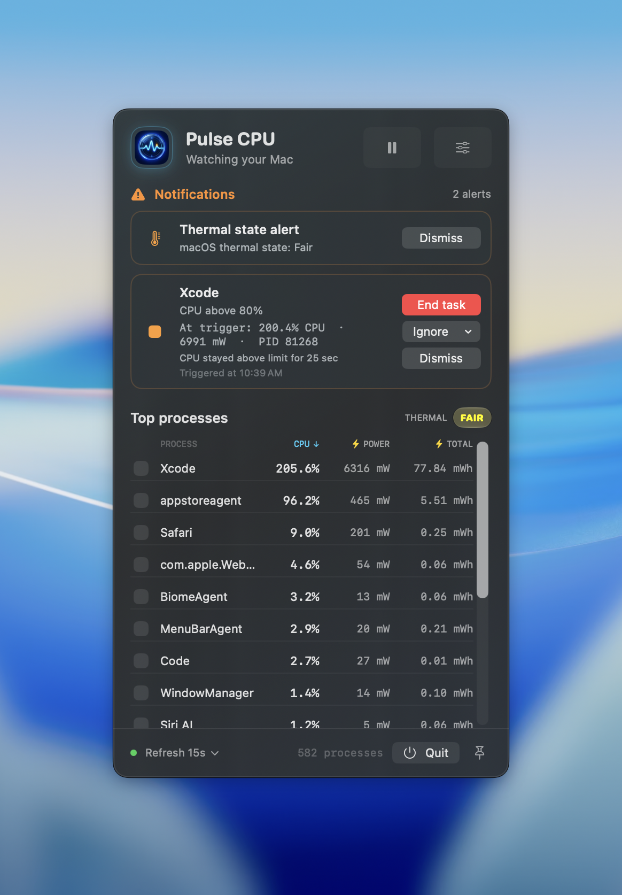
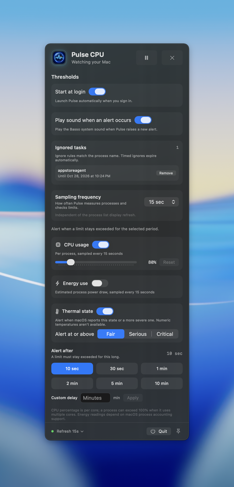

Find the busy process
Sort the live process list by CPU, current estimated power, or accumulated energy to see what is using your Mac’s resources.
Pulse CPUA small monitor for macOS
Pulse CPU keeps an eye on running tasks, their CPU use, estimated power draw, and your Mac’s thermal state. When a limit stays high, it brings the alert into view.
A native menu bar app for Mac

Make the limits yours
Set a CPU limit, an estimated power threshold, and the amount of time a task must stay over either one before Pulse raises an alert. You can also choose which macOS thermal state should trigger a warning.
CPU and power alerts can be tuned separately. Ignore a noisy task for an hour, a day, or until you remove the rule.
See what Pulse watches
From a glance to an alert
Sort the live process list by CPU, current estimated power, or accumulated energy to see what is using your Mac’s resources.
Pulse waits for a limit to remain exceeded for your chosen delay, then flags the task with its measured CPU and power context. An optional system sound can play.
Thermal alerts follow the state macOS reports—Fair, Serious, or Critical. macOS does not provide Pulse with a numeric temperature reading.
Built for the Mac
Pulse CPU is an independent Kind Park Studio project.